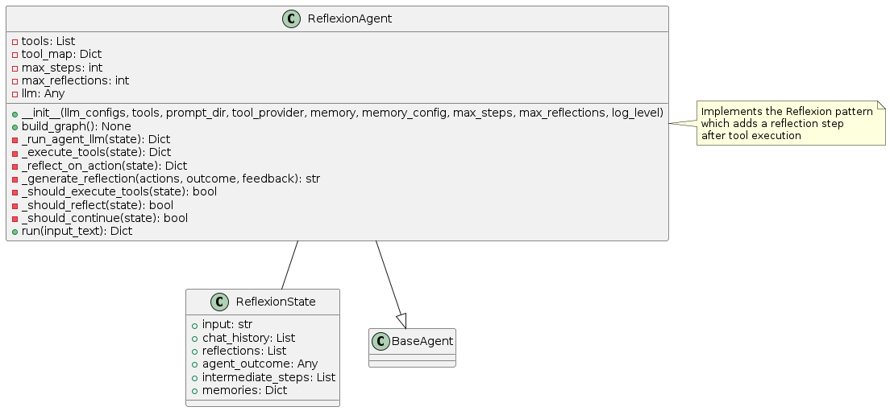
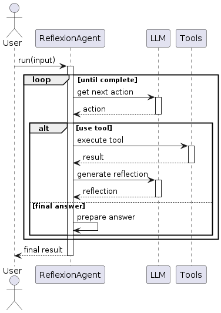
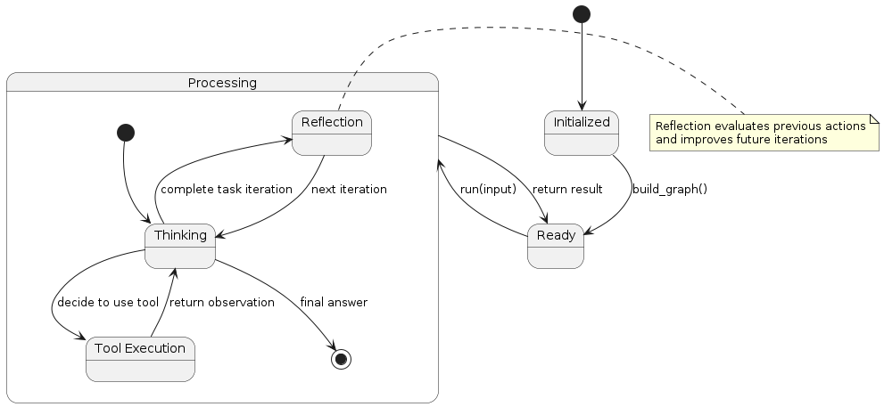

Reflexion Pattern
Overview
The Reflexion pattern extends the ReAct pattern by adding a reflection phase after action execution. This metacognitive capability allows the agent to learn from its own reasoning and actions, improving performance over time. The agent follows this cycle:
Reasoning: The LLM analyzes the current state and determines the next step
Acting: The agent executes an action based on its reasoning
Observing: The agent collects the result of the action
Reflecting: The agent analyzes what worked, what didn’t, and how to improve
Repeating: The cycle continues with improved strategies
The key innovation in this pattern is the explicit reflection step, which allows the agent to improve its approach based on experience.
Diagrams
Class Structure

The Reflexion pattern is implemented through:
ReflexionState: Extends the ReAct state with a reflections list to track insights
ReflexionAgent: Extends the ReAct agent with reflection capabilities, including methods for generating and using reflections
BaseAgent: The abstract base class from which all agent patterns inherit
Execution Flow

The execution flow follows:
User provides input to the ReflexionAgent
Agent examines the input and determines a course of action
If a tool is needed, the agent executes it and receives the result
After tool execution, the agent reflects on what happened
These reflections inform the next iteration of reasoning
The cycle continues until a final answer is reached
Final answer is returned to the user
State Transitions

The Reflexion pattern transitions through these states:
Initialized: Agent is created but not yet ready
Ready: Agent is ready to process input
Processing: Agent is actively working on the task
Thinking: Agent is reasoning about what to do next
Tool Execution: Agent is using a tool
Reflection: Agent is reflecting on previous actions and outcomes
Final state is reached when the agent determines a final answer
Use Cases
Complex Problem Solving: When problems require multiple attempts and refinement
Learning Tasks: For agents that need to improve through experience
Error Recovery: When initial approaches might fail and require correction
Optimization Problems: For finding increasingly better solutions through iteration
Explorative Tasks: When the environment or requirements are not fully known upfront
Implementation Guide
Here’s a simple example of using the ReflexionAgent:
from agent_patterns.patterns import ReflexionAgent
from agent_patterns.core.tools import ToolRegistry
from agent_patterns.core.memory import CompositeMemory, EpisodicMemory
from langchain.tools import tool
# Define a simple tool
@tool
def search(query: str) -> str:
"""Search for information about a topic."""
return f"Results for {query}: Some relevant information..."
# Create tool registry
tool_registry = ToolRegistry([search])
# Create memory system
memory = CompositeMemory({
"episodic": EpisodicMemory(),
})
# Configure the LLMs
llm_configs = {
"default": {
"provider": "openai",
"model": "gpt-4o",
"temperature": 0.7
}
}
# Initialize the Reflexion agent
agent = ReflexionAgent(
llm_configs=llm_configs,
tool_provider=tool_registry,
memory=memory,
max_reflections=3 # Maximum number of reflections per run
)
# Run the agent
result = agent.run("Solve this complex problem: determine the optimal route between cities A, B, and C.")
print(result)
Example References
The examples directory contains implementations of the Reflexion pattern:
examples/reflexion_agent.py: Complete Reflexion agent implementationexamples/reflexion_with_memory.py: Reflexion agent with enhanced memory capabilities
Best Practices
Design reflection prompts that encourage critical thinking about previous steps
Set an appropriate max_reflections value to balance improvement vs. efficiency
Save reflections to memory for use in future, similar tasks
Encourage the agent to identify specific improvements rather than general observations
Structure reflection phases to focus on different aspects (logic errors, missed information, strategy)
Consider using different LLM configurations for reflection vs. action steps